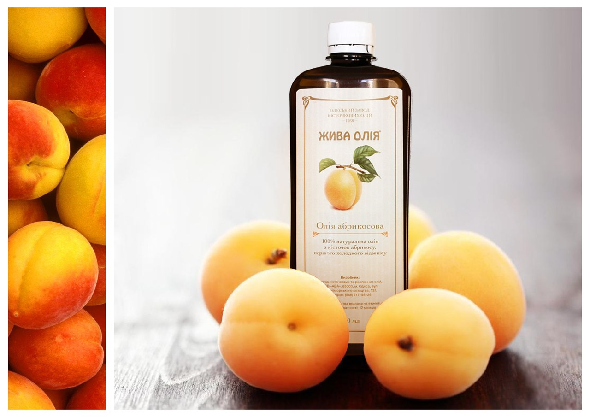
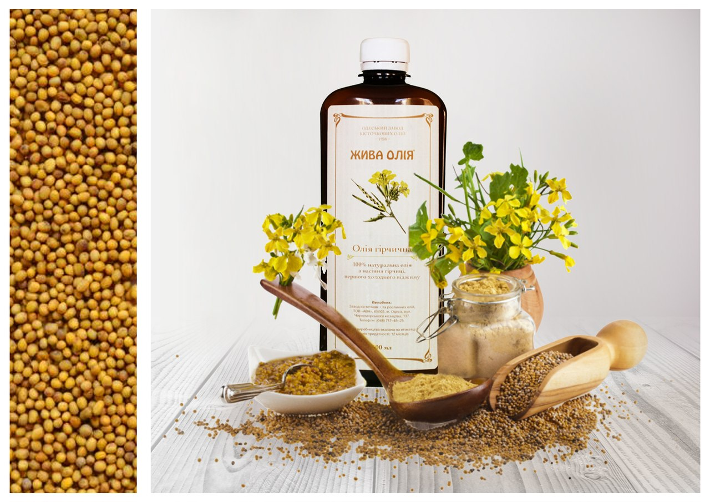
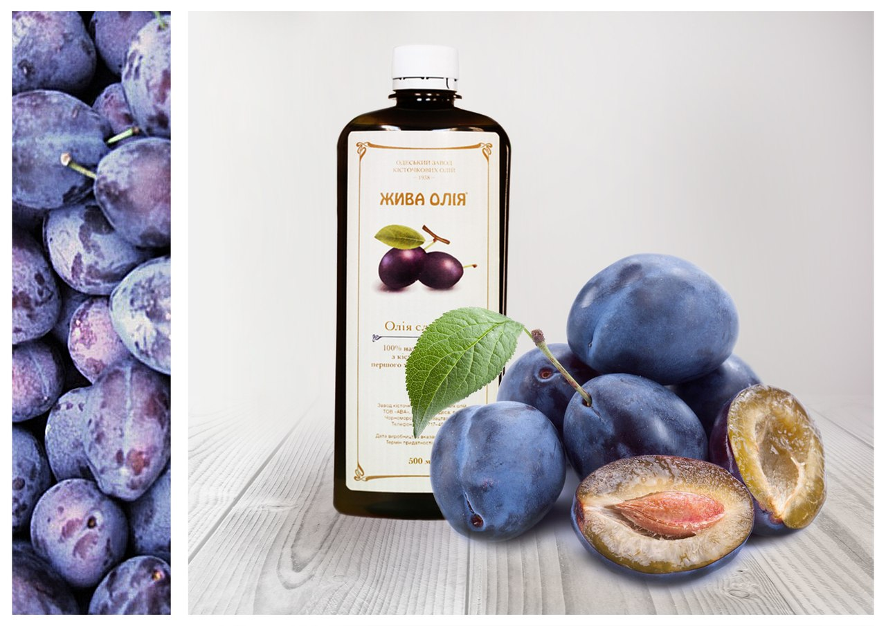
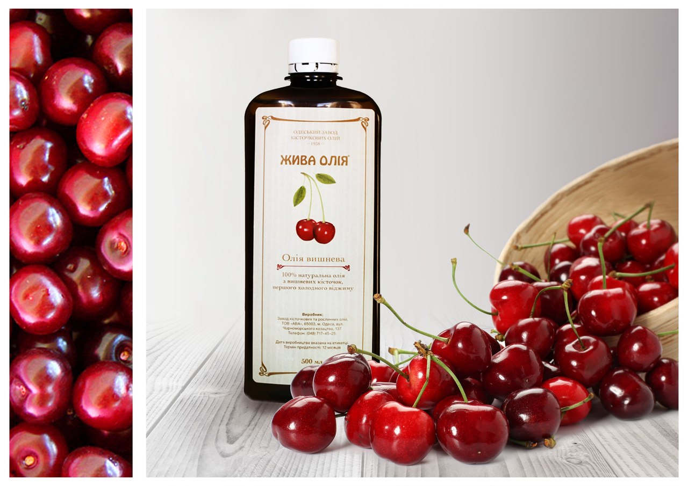
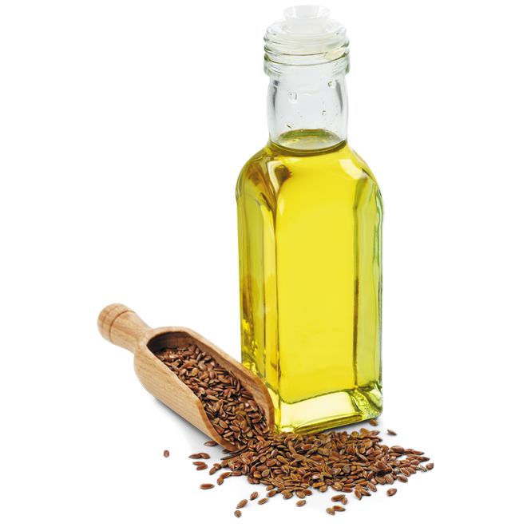
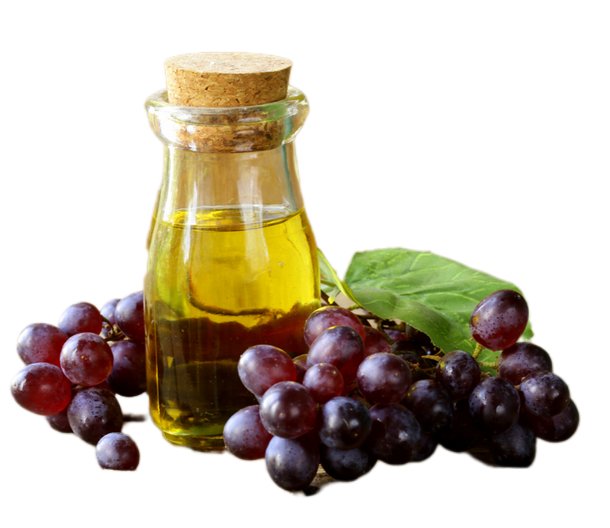

Наша продукція

Олія абрикосова
- Олія абрикоса має добре збалансований жирнокислотний склад. Воно покращує процеси кровотворення та роботу серця, сприяє виведенню з організму холестерину, стимулює перистальтику кишечника, виявляє загальнозміцнюючу дію. Крім того, абрикосова олія має високу біологічну активність, тому уповільнює процеси старіння і попереджає появу зморшок.
- Олія абрикосових кісточок - це просто незамінний засіб для шкіри, яка страждає від нестачі вітамінів, і не отримує належного харчування та зволоження
- Профілактика та лікування захворювань нирок та серцево-судинної системи
- Виводить надмірну кількість води з організму
- Покращує гостроту зору
- Для людей, які страждають на анемію, застосовується регулярно
- Бере участь у нормалізації фосфорно – кальцієвого обміну
- Активно впливає на обмін речовин
- Зволожує та регенерує суху та старіючу шкіру
- Застосовується для догляду за шкірою дітей, бо абрикосова олія гіпоалергенна
- Якщо ваше волосся сухе, ламке то абрикосове масло вам просто необхідно! Воно допоможе вдихнути життя у ваше волосся, зробить його блискучим, шовковистим, густим і гладким.

Олія гірчична
- Гірчична олія – це не лише цінний поживний продукт, але й лікувальний препарат із широким спектром терапевтичної дії. Кілька століть тому гірчичне масло подавалося тільки за царського двору і називалося "імператорським делікатесом". Завдяки антисептичним та бактерицидним властивостям гірчична олія чудово підходить для лікування багатьох захворювань. Гірчична олія містить усі жиророзчинні вітаміни, ненасичені жирні кислоти, у тому числі ліноленову кислоту.
- чудово підходить для лікування серцево-судинних та простудних захворювань
- Є природним антибіотиком і має сильну бактерицидну дію
- Покращує склад крові
- Має антигельмінтну активність
- Покращує апетит, стимулює травлення
- Сприяє зростанню та розвитку організму
- Підвищує стійкість організму до інфекцій
- Сприяє виробленню вітаміну В6
- Має судинорозширювальну дію
- Застосовується для масажу
- Знімає м'язову напругу
- Використовується для лікування артриту та подагри
- Освіжає та омолоджує шкіру
- Запобігає випаданню і сивину воло
- Підвищує імунітет
- Робить рівномірну засмагу шкіри на сонці
- Покращує склад крові
- Для виготовлення кондитерських виробів
- Використовують у хлібопеченні
- Додавати до салатів щодня

Олія сливових кісточок
- Олію сливових кісточок цінують любителі експериментувати і відкривати для нові смакові відчуття страв, що давно полюбилися. Не потрібно бути істинним гурманом щоб гідно оцінити його чудові смакові властивості. Вас зачарує його чарівний аромат гіркого мигдалю, що надає стравам та косметичним препаратам витонченого спокусливого паху.
- Наявність вітаміну Е і ситостеролу, регулює проникність шкірного бар'єру і має гарну зволожуючу властивість
- Профілактика серцево-судинної системи
- Сприяє виведенню шлаків із організму
- Покращує процеси обміну речовин
- Рекомендується для сухої та зрілої шкіри
- Зволожує та живить пошкоджену шкіру
- Освіжає колір обличчя
- Відновлює зволоженість губ, надає їм м'якості та об'єму
- Олія сливи, завдяки своєму складу, запобігає втраті колагену в шкірі та стимулює процеси загоєння
- Завдяки високому вмісту вітаміну Е, олія Сливи стійка до окислення і може бути нагріта до високої температури без зниження її властивостей

Олія вишневих кісточок
- Олія вишні - дуже багата на вітаміни і мікроелементи, має збалансований жирнокислотний склад, застосовується як в пишу, так і для приготування різних масок, а при регулярному вживанні надає прекрасний вплив на весь організм в цілому. Це єдина олія, в якій міститься достатня кількість чотирьох основних вітамінів для правильного обміну речовин
- Допомагає знизити рівень холестерину та запобігти серцево-судинним захворюванням
- Використовується в лікуванні та профілактиці онкологічних захворювань
- Стимулює захисні сили організму
- Підвищує стійкість до інфекційних захворювань
- Сприяє розвитку м'язів, підвищують працездатність
- Особливо корисно при шкірних подразненнях, лущення
- Чудово для сухої та зрілої шкіри, а також балансує жирну шкіру
- Має протизапальну, протиопікову, болезаспокійливу та пом'якшувальну дію
- Чудова олія для масажу
- Є природним УФ – фільтром
- Забезпечує загоєння ран та шкірних дефектів без утворення рубців
- Застосовують у крем для шкіри обличчя

Олія лляна
- знижує рівень холестерину
- покращує роботу органів ШКТ
- покращує дію інсуліну
- захищає організм від виникнення діабету
- покращує лікування астми
- профілактика ракових захворювань
- знижує алергічну реакцію
- ефективно при лікуванні артритів
- обов'язковий елемент у раціоні вагітних
- покращує стан після операції
- сприяє поліпшенню стану шкіри та волосся
- сприяє нормалізації жирового обміну
- чудовий замінник риб'ячого жиру
- легко засвоюване
- активізує відновлення клітин організму
- покращує роботу мозку, ендокринної системи
- активізує вироблення статевих гормонів
- благотворно впливає на нервову систему
- джерело вітамінів при авітамінозу
- підвищує потенцію
- корисно у розвиток дитячого організму

Олія з виноградних кісточок
- Олія з виноградних кісточок - ще один прекрасний вид олії. Завдяки високому вмісту лінолевої кислоти воно добре допомагає боротися з надлишком холестерину, тим самим сприятливо впливаючи на жировий обмін. Олію виноградної кісточки можна по праву вважати рецептом здоров'я, молодості та краси
- Знижує холестерин, запобігає гіпертонії та серцевим нападам.
- Посилює обмін речовин і має тонізуючий ефект
- Позитивно впливає на нирки
- Допомагає боротися із вільними радикалами
- Чудовий засіб для догляду за пересушеним, ламким волоссям
- Сильна протизапальна, регенеруюча дія
- Сприяє омолодженню, підвищенню пружності шкіри, усуненню зморшок
- Доцільно використовувати при лікуванні висипу вугрів
- Відповідний засіб для збереження пружності та тонусу грудей
- Ефективно у боротьбі з целюлітом, варикозом та куперозом
- Знижує ризик гормон залежних пухлин